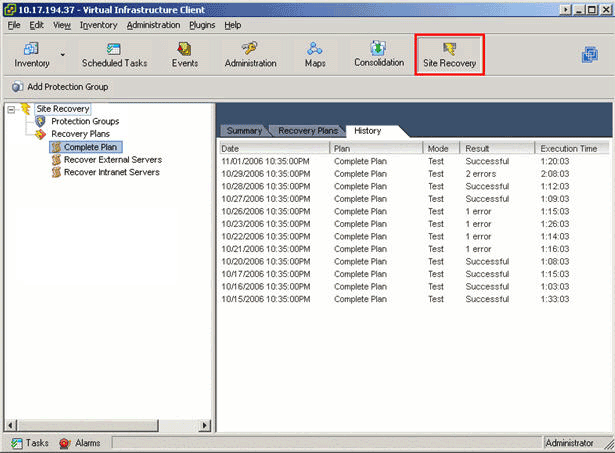
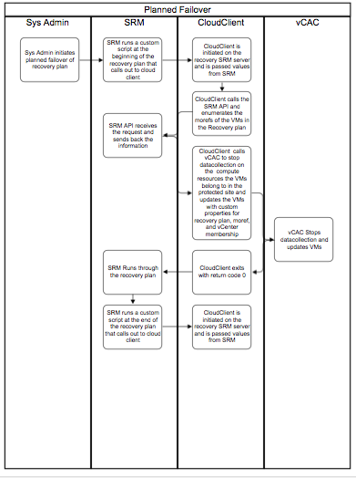

This version of CloudClient supports vRA interoperability with vRA 6.0 & 6.1 so that when machines fail over within SRM, vRA machines are updated to reflect new Host/Cluster/Reservation allocation for continued management. 
To provide details on the setup required to protect resource machines with vRA SRM, making use of CloudClient v3.0.0 and its SRM support, vRA can be updated dynamically to allow for Day 2 operations and ongoing management to occur within vRA after a planned fail over or disaster occurrence.
Typically a vSphere hosted VM managed by vRA belongs to a reservation, which belongs to a compute resource (cluster), which in turn belongs to a vSphere Endpoint. The VMs reservation in vRA needs to be accurate in order for vRA to know which vSphere proxy agent to utilize to manage that VM in the underlying vSphere infrastructure. This is all well and good and causes few (if any) problems in a single site setup, as the VM will not normally move from the vSphere endpoint it is originally located on.
With a multi-site deployment utilizing Site Recovery Manager all this changes as part of the site to site fail over process involves moving VMs from one vCenter to another. This has the effect in vRA of moving the VM to a different endpoint, but the reservation becomes stale. As a result it becomes no longer possible to perform day 2 operation on the VMs until the reservation is updated.
c:\windows\system32\cmd.exe /c <path to cloud client>\<script name>.bat
"\lib/*" should be replaced with "<path to cloud client>\lib/*"
<path to cloud client>\vrashell.bat srm protected vra vms stop datacollection --srmserver cse-vcenter-dr.eng.vmware.com --srmuser <vCenter User> --srmpassword <Password> --recoveryplan %VMware_RecoveryName% --recoverymode %VMware_RecoveryMode%
<path to cloud client>\vrashell.bat srm protected vra vms start datacollection --recoveryplan %VMware_RecoveryName% --recoverymode %VMware_RecoveryMode% --vcenterinfo %VMware_VC_Host%
Overview
Problem Statement
Environment Configuration
SRM
vRA
Cloud Client
Pre Failover Script:
Post Failover Script:
Process Flows
